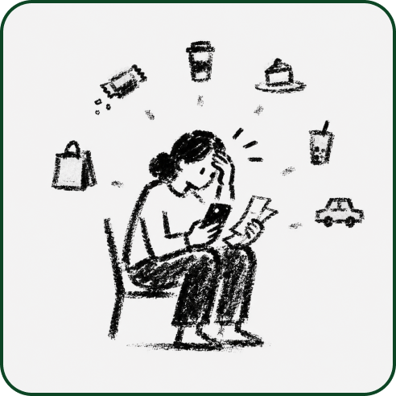
01Small spending stays invisible.
Small purchases are easy to dismiss until they add up and become a source of stress.
Design implication Make the effect of small choices visible before patterns accumulate.
Penny / Financial wellbeing / Product design
Budgeting tools often explain what happened after the money is gone.
Penny helps young adults understand what matters, notice everyday tradeoffs, and connect small spending decisions to longer-term goals.
Make reflection useful
before spending.
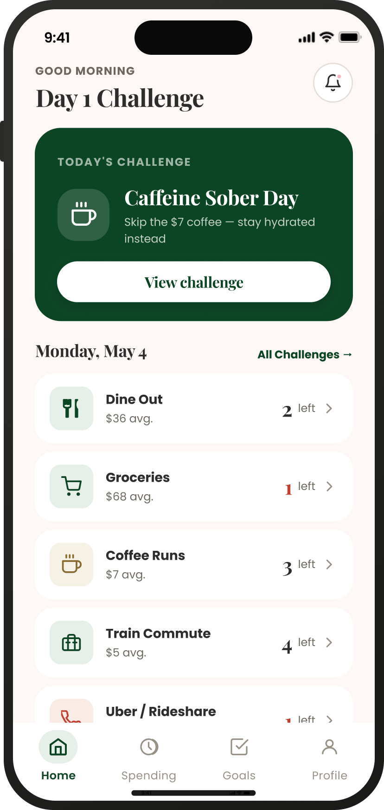
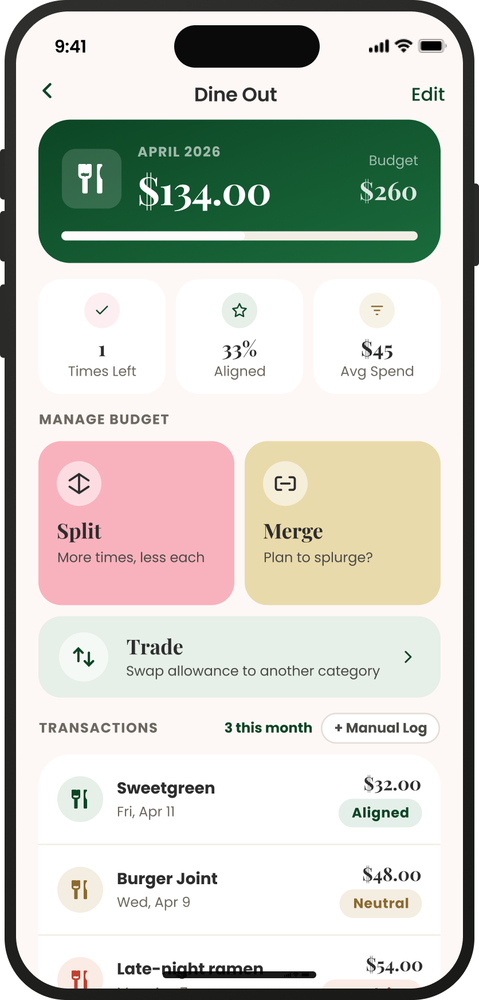
01 / The problem
Many young adults download financial apps because they want to save more, spend smarter, and feel in control.
But budgeting often starts to feel cold, stressful, and easy to avoid. Support usually arrives after spending, when a lower balance or a monthly chart explains what already happened.
Penny reframes those stressful moments as small chances to pause, reflect, and choose with intention.
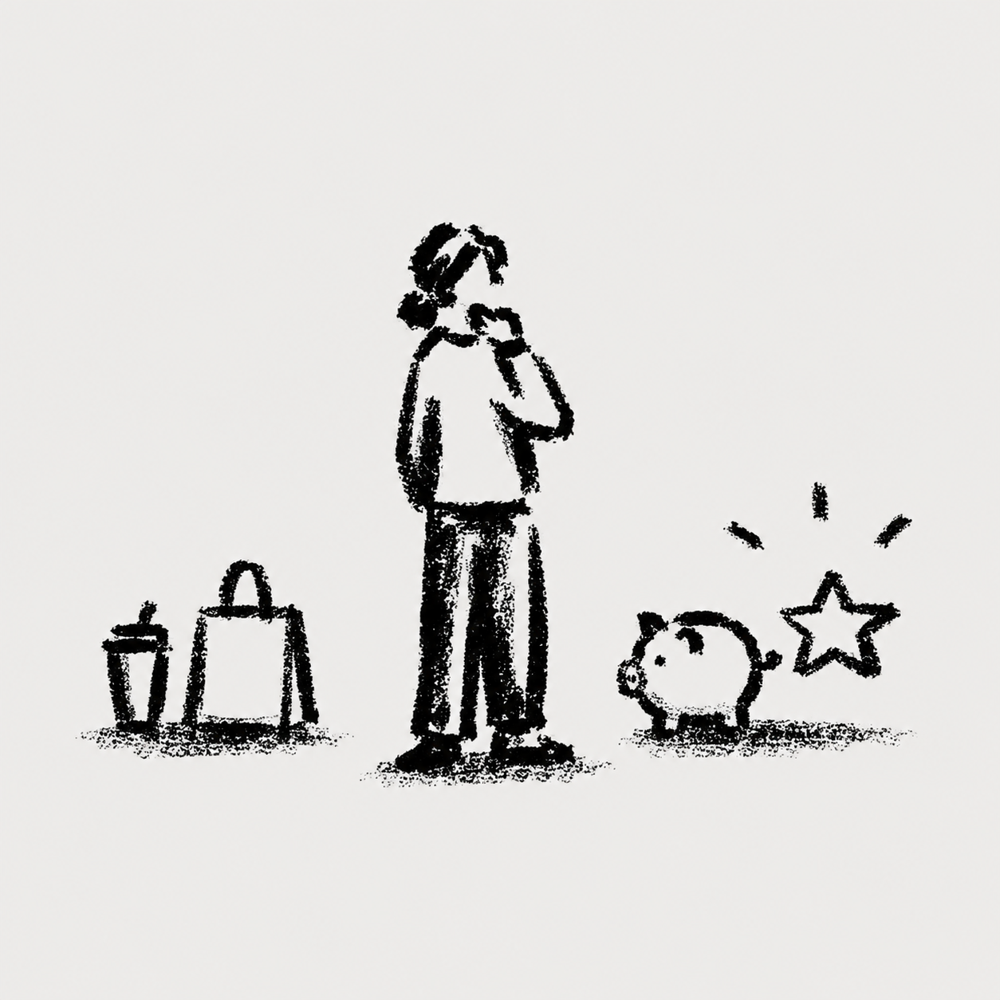
The opportunity
Move support from
“What went wrong?” to
“What matters right now?”
The design challenge was to support awareness without making the experience controlling, restrictive, or judgmental.
02 / Research & insight
Through 18 in-depth interviews with young adults ages 18 to 30, supported by competitive analysis, affinity mapping, and journey mapping, I identified three recurring barriers between good intentions and everyday decisions.

01Small purchases are easy to dismiss until they add up and become a source of stress.
Design implication Make the effect of small choices visible before patterns accumulate.
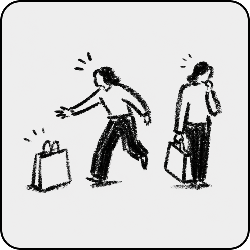
02Reflection usually comes later. Users need support before spending, not only afterward.
Design implication Move reflection to the moment when a decision can still change.
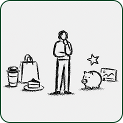
03Users struggle to see how one everyday choice changes progress toward something they care about.
Design implication Connect daily decisions to progress users personally value.
How might we
How might we help young adults build awareness and reflection around impulsive spending without adding more pressure?
Making sense of the problem
Mind mapping, affinity mapping, SCAMPER, competitive research, and SWOT analysis helped organize the opportunity around behavior rather than another tracking dashboard.
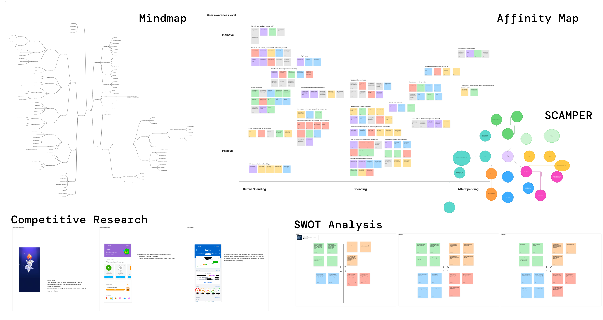
Why we mapped the spending journey
Mapping the journey showed that reflection spiked only after the balance dropped. The opportunity was to add small moments of awareness while a choice was still being made.
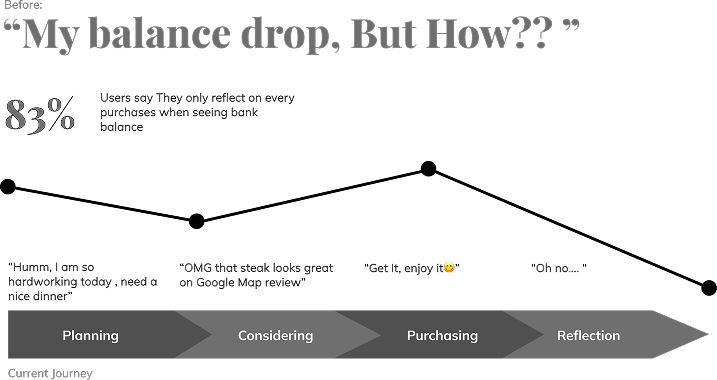
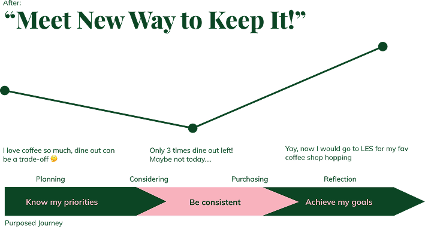
03 / Three design directions
Research translated into three connected directions: understand priorities, pace daily spending, and make progress toward goals visible.
The user wants to save for a bigger goal while still enjoying everyday life.
Design goal / Help users understand what they value before setting a budget.
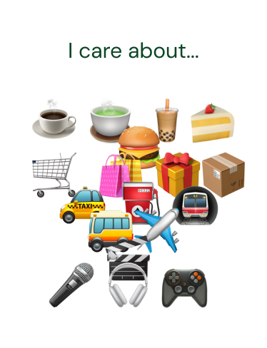
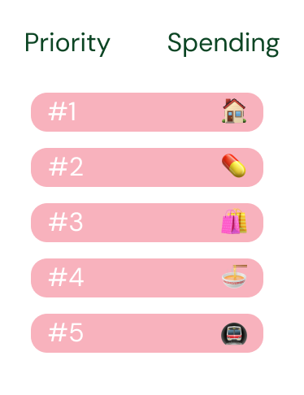
During the week, small temptations such as coffee, delivery, or going out can quietly consume a budget.
Design goal / Turn limits into clear, flexible spending moments.
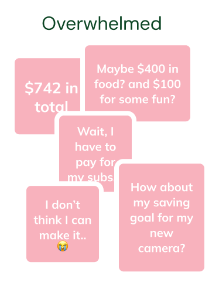
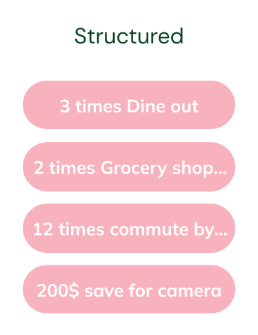
A skipped purchase becomes more meaningful when the user can see what that choice protected.
Design goal / Connect everyday decisions to visible long-term progress.
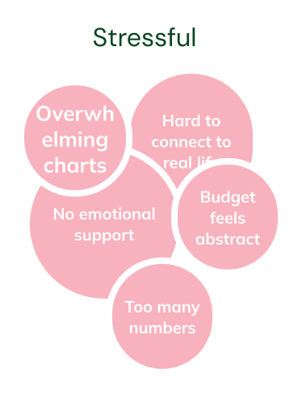
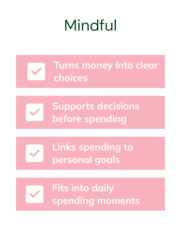
04 / The designed experience
The final prototype carries the three design directions through onboarding, daily choices, flexible tradeoffs, and progress toward goals.
Instead of treating every category equally, Penny asks users to compare priorities and review their ranked spending values.
This gives the budget a personal order before numbers and limits enter the experience.
Design intent / Make the system reflect the user’s values.
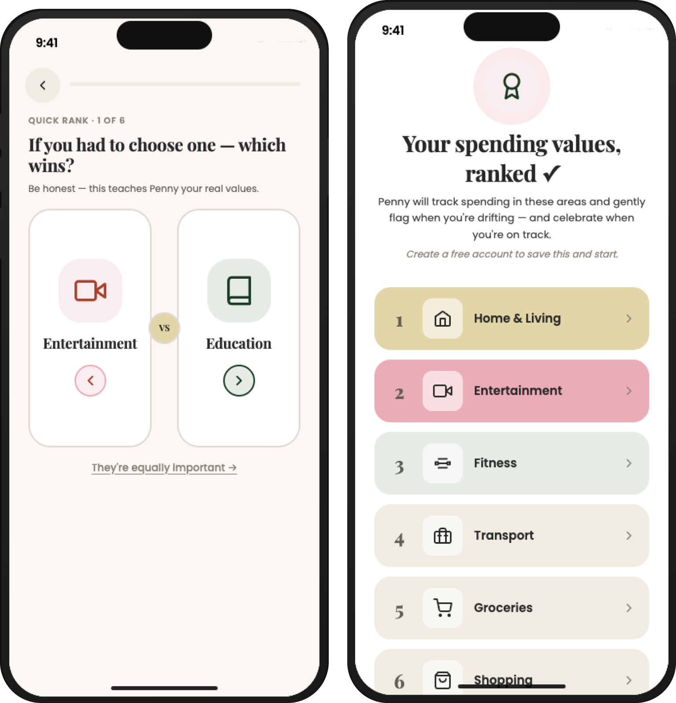
Penny turns abstract category budgets into countable spending tickets, such as two dine-out moments remaining.
The structure supports pacing without making everyday enjoyment feel forbidden.
Design intent / Build awareness without punishment.
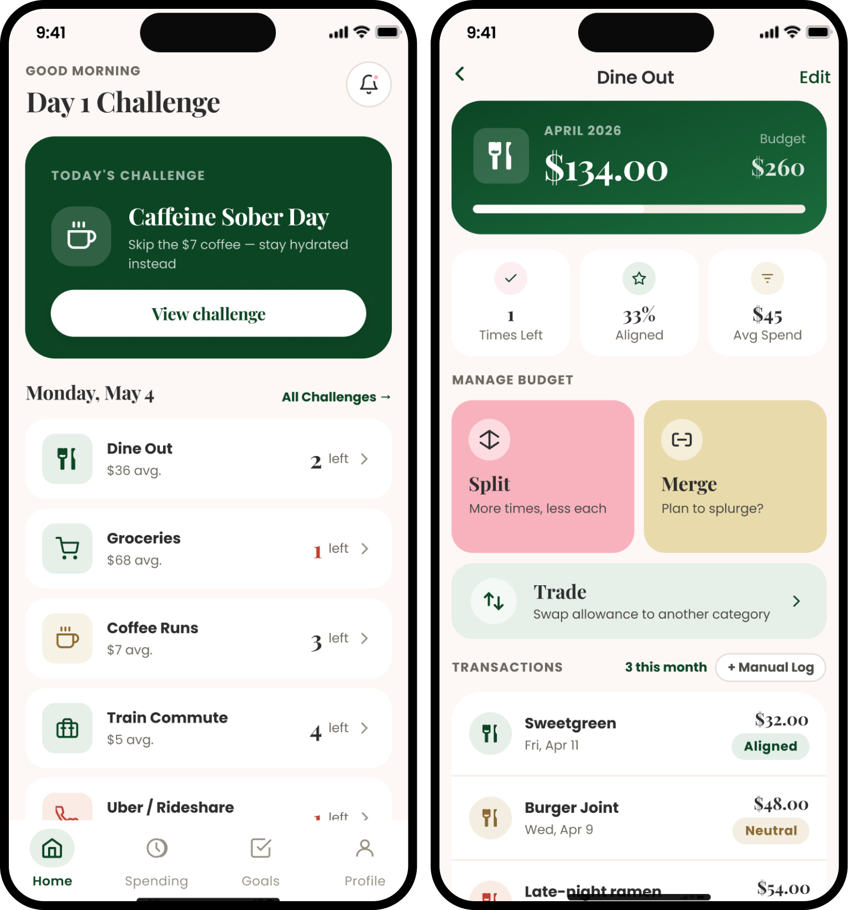
Split, merge, and trade actions let users adjust a plan while keeping the consequence visible.
Instead of simply adding more spending, the interaction asks what should change elsewhere.
Design intent / Preserve flexibility while making the cost legible.
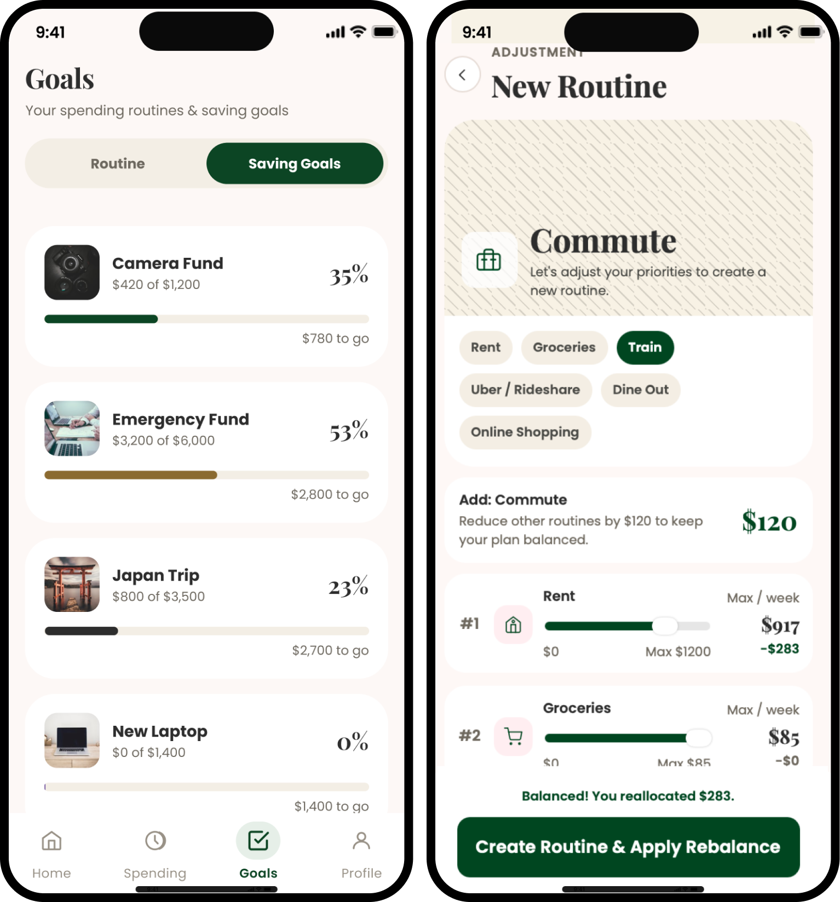
Reports, achievements, and goal updates show what mindful choices helped protect, along with what the user spent.
This connects daily behavior to progress that feels emotionally relevant.
Design intent / Turn reflection into motivation.
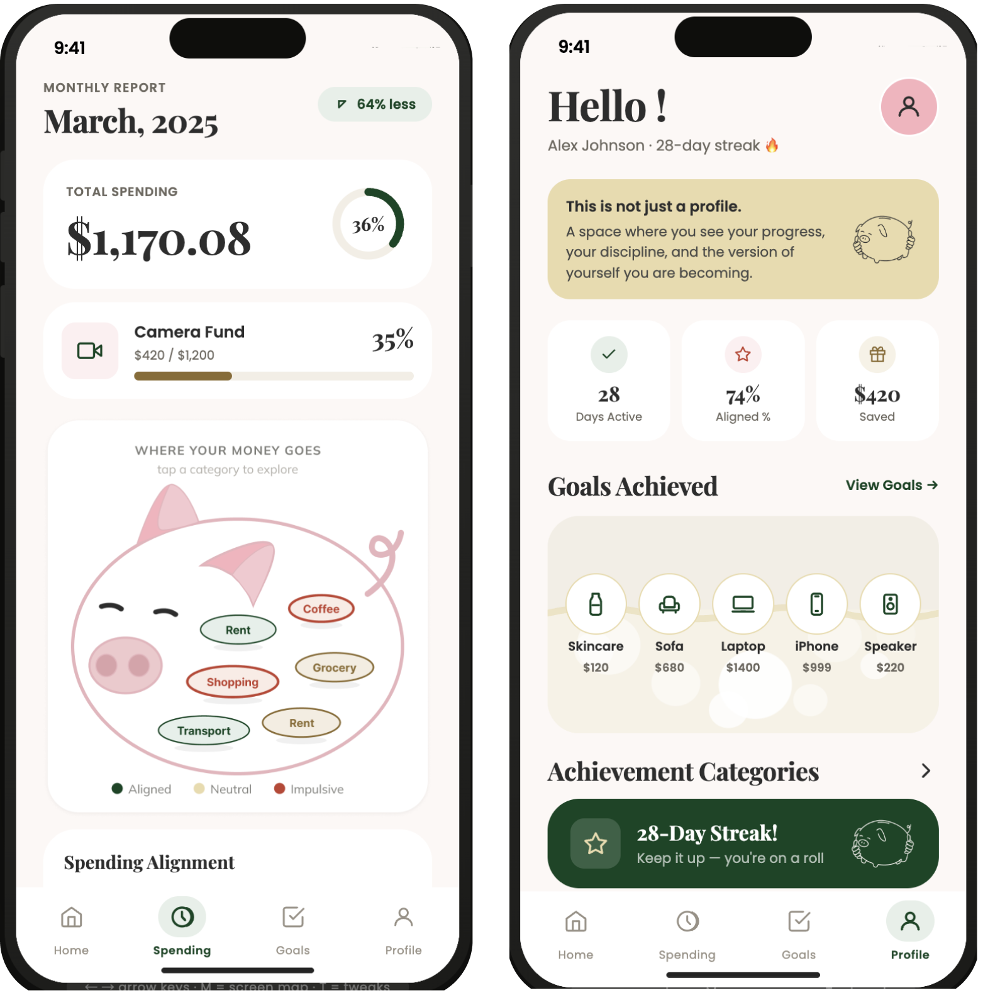
05 / User testing
We tested the high-fidelity prototype to learn whether Penny’s core features were clear and whether the experience felt supportive.
Users liked having flexible control, but the purpose of each action needed clearer explanation.
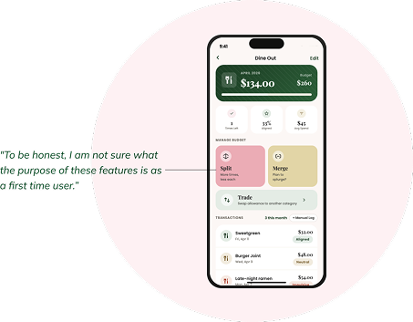
“I am not sure what the purpose of these features is as a first-time user.”Participant feedback
Users understood the reward system, but wanted badges and numbers to feel more specific and motivating.
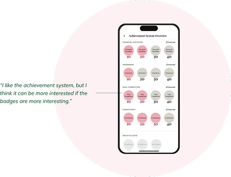
“I like the achievement system, but the badges could be more interesting.”Participant feedback
Users were interested in alignment data, but needed clearer labels, timeframe, and context.
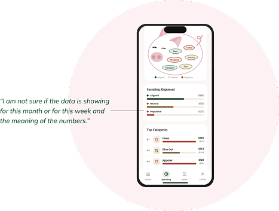
“I am not sure if the data is for this month or this week.”Participant feedback
What I carried forward
Penny showed that budgeting is not only a numbers problem. It is also about timing, emotion, and motivation.
Users do not need more pressure around money. They need clearer support at the moment of decision.
The product’s most useful shift was moving reflection from after spending to the point where a choice can still change.